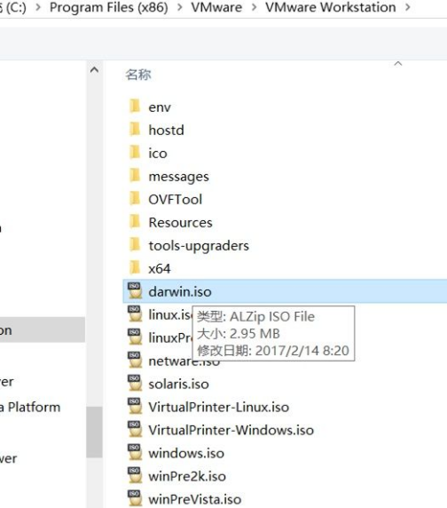
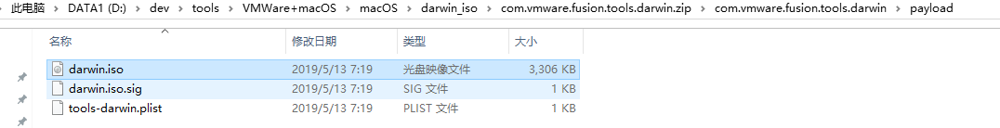

darwin.iso
VMWare针对macOS中的VMWare Tools，对应的文件就是：darwin.iso
针对不同版本的VMWare+不同版本的macOS，往往不容易找到合适版本的darwin.iso。
此处总结一下这方面的心得：
- 旧版本VMWare中，自带对应的darwin.iso的
- 比如：
- 
- 比如：
- 而新版本中，已经没了
- 我此处用了最新版的
VMWare 15.6，就找不到对应的macOS的VMWare Tools，即darwin.iso- 导致只能选用之前版本的darwin.iso
- 且还要注意
- 和当前macOS版本相匹配，不能太旧，否则各种问题：
- 要么无法安装
- 要么安装后屏幕显示异常（分辨率有问题）
- 要么证书过期
- 和当前macOS版本相匹配，不能太旧，否则各种问题：
- 且还要注意
- 导致只能选用之前版本的darwin.iso
- 我此处用了最新版的
macOS 10.14即Mojave匹配的darwin.iso
比如，此处macOS是10.14（也叫做：Mojave）
要去找和macOS 10.14即Mojave匹配的darwin.iso
- 此处我已上传到网盘：
macOS_Mojave_darwin.iso- 链接: https://pan.baidu.com/s/1qxn8kdNfZ5LoTdTG1tfVhA 提取码: b8gs
- 而不能用太旧的不匹配的版本
- 比如
macOS 10.13的darwin.iso- 否则就会各种问题
- 比如
其他旧版本
比如，网上找到了其他的旧版本：
VMWare 11.1.0- http://softwareupdate.vmware.com/cds/vmw-desktop/fusion/11.1.0/13668589/packages/com.vmware.fusion.tools.darwin.zip.tar
- 下载得到压缩包：
com.vmware.fusion.tools.darwin.zip - 解压后得到的：
com.vmware.fusion.tools.darwin.zip\com.vmware.fusion.tools.darwin\payload\darwin.iso- 
- 下载得到压缩包：
- http://softwareupdate.vmware.com/cds/vmw-desktop/fusion/11.1.0/13668589/packages/com.vmware.fusion.tools.darwin.zip.tar
- 另外还有个
darwinPre15- http://softwareupdate.vmware.com/cds/vmw-desktop/fusion/11.1.0/13668589/packages/com.vmware.fusion.tools.darwinPre15.zip.tar
- 其中：
pre15：表示previous version before 15=老版本的意思
- 其中：
- 所以不适用此处新版本，可忽略，不用下载
- 如果你需要可以下载试试
- http://softwareupdate.vmware.com/cds/vmw-desktop/fusion/11.1.0/13668589/packages/com.vmware.fusion.tools.darwinPre15.zip.tar